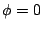
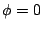
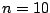
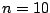
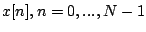

Next: Wavetables and samplers
Up: Sinusoids, amplitude and frequency
Previous: More additive synthesis
Contents
Index
- A sinusoid (Page
![[*]](file:/usr/local/share/lib/latex2html/icons/crossref.png) ) has initial phase  and
angular frequency
) has initial phase  and
angular frequency
 . What is its period in samples? What is
the phase at sample number ?
. What is its period in samples? What is
the phase at sample number ?
- Two sinusoids have periods of 20 and 30 samples, respectively. What is
the period of the sum of the two?
- If 0 dB corresponds to an amplitude of 1,
how many dB corresponds to amplitudes of 1.5, 2, 3, and 5?
- Two uncorrelated signals of RMS amplitude 3 and 4 are added; what's the
RMS amplitude of the sum?
- How many uncorrelated signals, all of equal amplitude, would you have
to add to get a signal that is 9 dB greater in amplitude?
- What is the angular frequency of middle C at 44100 samples per second?
- Two sinusoids play at middle C (MIDI 60) and the neighboring C sharp
(MIDI 61). What is the difference, in Hertz, between their frequencies?
- How many cents is the interval between the seventh and the eighth harmonic of
a periodic signal?
- If an audio signal
 has peak amplitude 1, what
is the minimum possible RMS amplitude? What is the maximum possible?
Next: Wavetables and samplers
Up: Sinusoids, amplitude and frequency
Previous: More additive synthesis
Contents
Index
Miller Puckette
2006-12-30